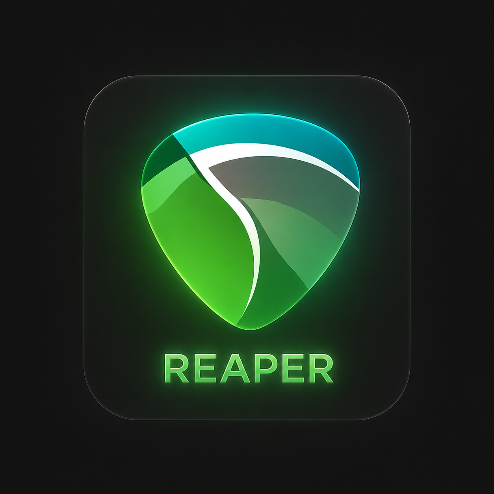
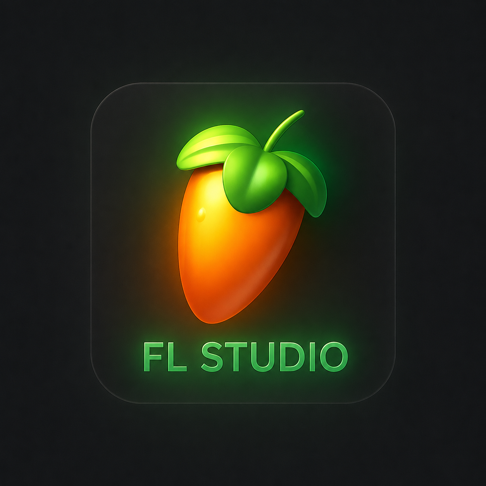

MY SKILLS
Technical Skills
I am an Electronics and Communication Engineering student with a strong interest in IoT, embedded systems, automobile electronics, and web development. I have worked on various projects using Raspberry Pi, Arduino Uno, Raspberry Pi Pico WH, IR sensors, ultrasonic sensors, GSM/GPS modules, ADC interfacing, UART communication, and real-time monitoring systems. I enjoy working with embedded hardware, sensor interfacing, and automation-based applications.
I have programming knowledge in Python, Embedded C, MicroPython, MATLAB, HTML, CSS, and Bootstrap. I have also explored TinyML and edge AI concepts using Edge Impulse and worked on machine learning concepts such as Logistic Regression, SVM, and TensorFlow. My areas of interest include IoT systems, ECU technologies, truck electronics, vehicle safety systems, smart automation, signal processing, and responsive web designing. I am also interested in learning modern automotive technologies and intelligent embedded solutions used in automobiles and heavy vehicles.
Apart from academics, I continuously improve my technical knowledge through online learning platforms and practical project development.


Non-Technical Skills
I am a student to learn a new things with eager to good in problem-solving, analytical thinking, and teamwork skills. I have ability to adapt easily to new technologies but even I want to lean a new technologies and enjoy learning beyond classroom concepts through practical experiences and industrial exposure. I have good communication and presentation skills, which help me work effectively in both team-based and individual projects.
I am also passionate about music programming, keyboard playing, and music composition, which help me improve my creativity and concentration. Along with technology, I have a strong interest in trucks, automobiles, and advanced vehicle systems. I enjoy exploring new ideas, learning from real-world experiences, and building projects that combine creativity with technology.